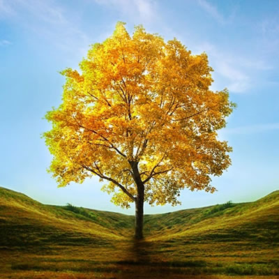
Ipê-amarelo
Handroanthus chrysotrichusÁrvore símbolo do Brasil. Floresce intensamente no inverno, perdendo as folhas antes da floração. Madeira muito resistente.
As árvores são as criaturas mais antigas e altas que vivem entre nós. Elas filtram o ar, abrigam aves, alimentam povos e perfumam estações. Esta é uma jornada por suas formas, nomes, histórias e mistérios.
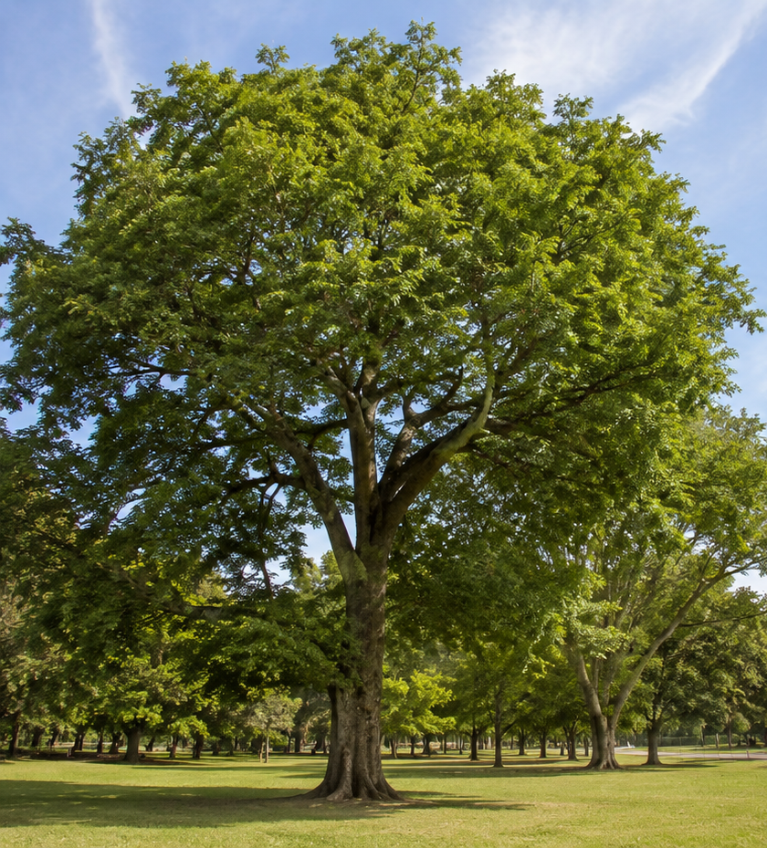
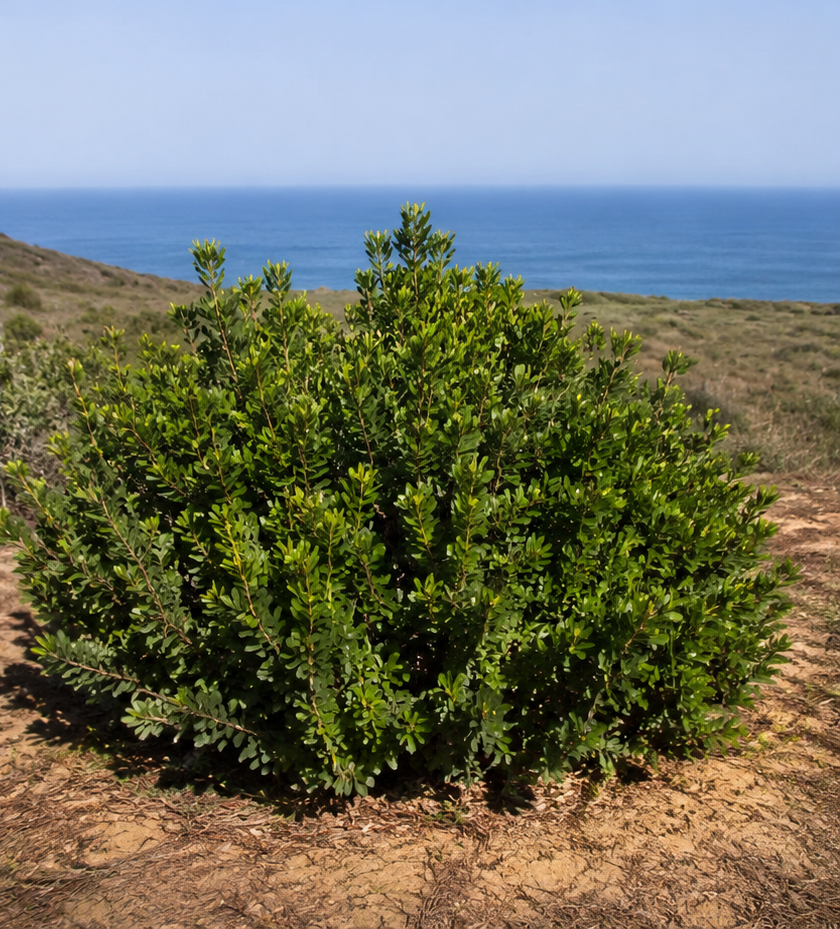
Cada folha é uma pequena indústria movida a luz solar. Sem elas, não há árvore — e sem árvores, não há ar.
Fotossíntese: capturam a luz do sol, absorvem gás carbônico (CO₂) e, com a água trazida pelas raízes, produzem glicose — o alimento da árvore — liberando oxigênio para o ambiente.
Respiração: assim como nós, as árvores respiram, absorvendo oxigênio e liberando CO₂, principalmente à noite.
Transpiração: liberam vapor de água através dos estômatos, ajudando a regular a temperatura da árvore e contribuindo para a formação de chuvas.
Trocas gasosas: são as portas pelas quais a árvore conversa com a atmosfera.
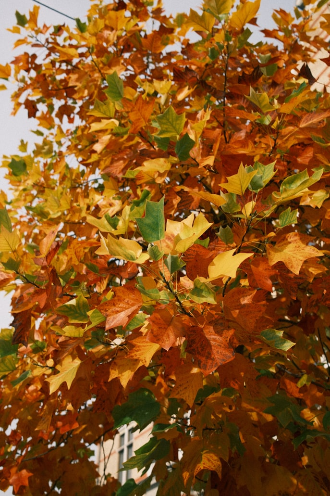
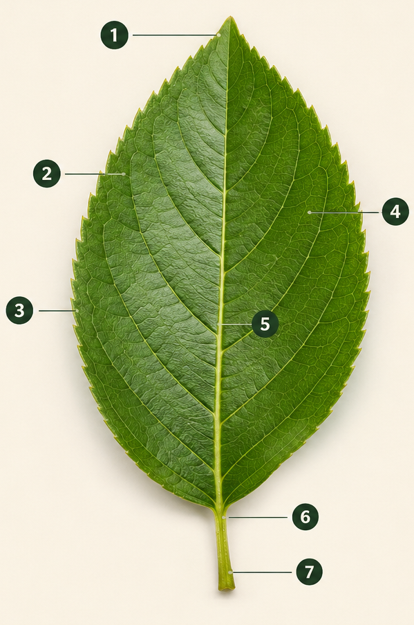
Conheça as árvores que merecem entrar na sua coleção de exsicatas — folhas prensadas, secas e identificadas como pequenos retratos botânicos.
Colete folha (com pecíolo, se possível), prense entre folhas de jornal sob peso por 7 a 15 dias trocando o jornal a cada 2 dias. Depois cole em cartolina branca e identifique com uma etiqueta contendo: nome científico, família, nome popular, características, local e data da coleta.

Árvore símbolo do Brasil. Floresce intensamente no inverno, perdendo as folhas antes da floração. Madeira muito resistente.
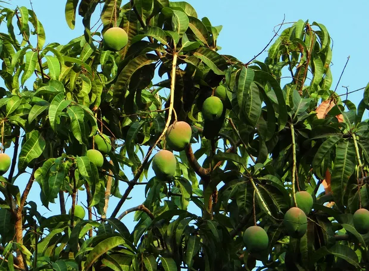
Originária da Índia, frondosa e umbrosa. Folhas lanceoladas, fruto saboroso e copa densa.
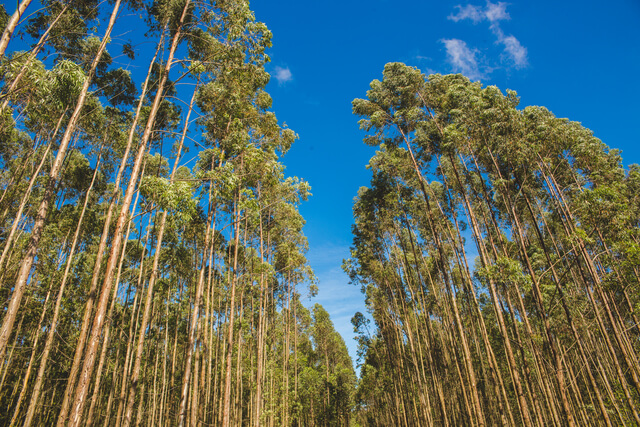
Árvore de crescimento rápido, originária da Austrália. Folhas aromáticas usadas em medicamentos para vias respiratórias.
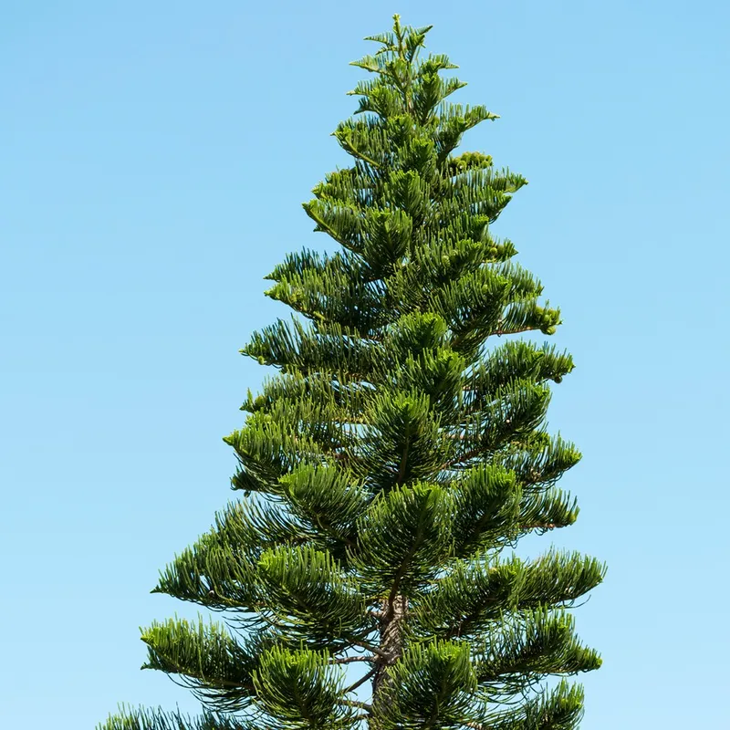
Folhas em forma de agulha, frutos em cones (pinhas). Conífera, presente em florestas frias e plantios de reflorestamento.
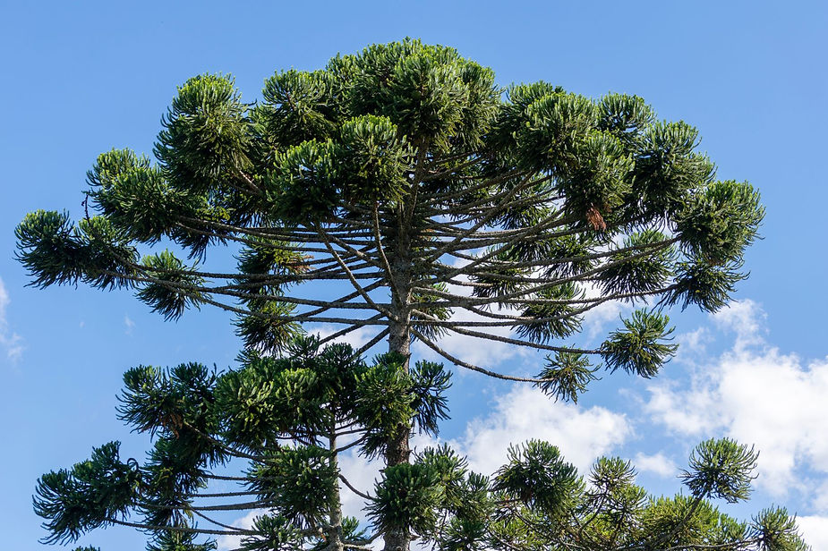
Símbolo do sul do Brasil, copa em formato de taça. Produz o pinhão, semente comestível.
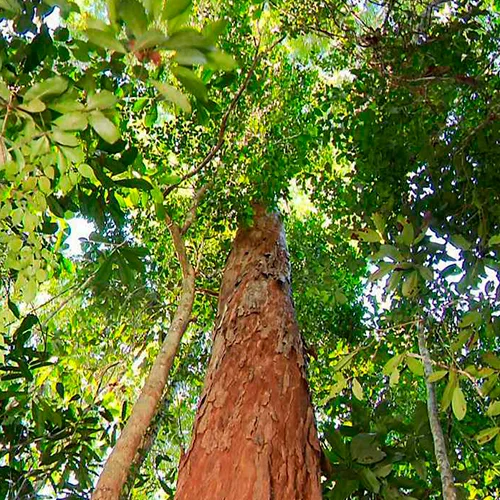
Árvore que deu nome ao Brasil. Sua madeira tem coloração avermelhada e foi usada para tingir tecidos.
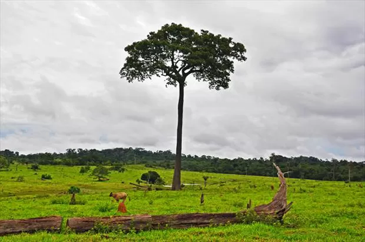
Gigante da Amazônia. Pode ultrapassar 50 m de altura. Produz a castanha-do-Pará dentro de ouriços lenhosos.
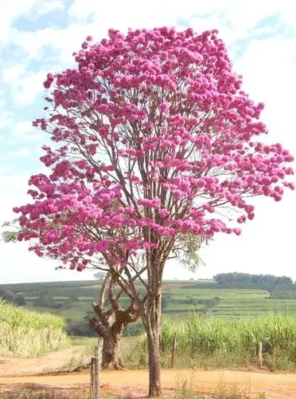
Uma das maiores árvores brasileiras, podendo viver mais de 1.000 anos e atingir 50 m de altura.
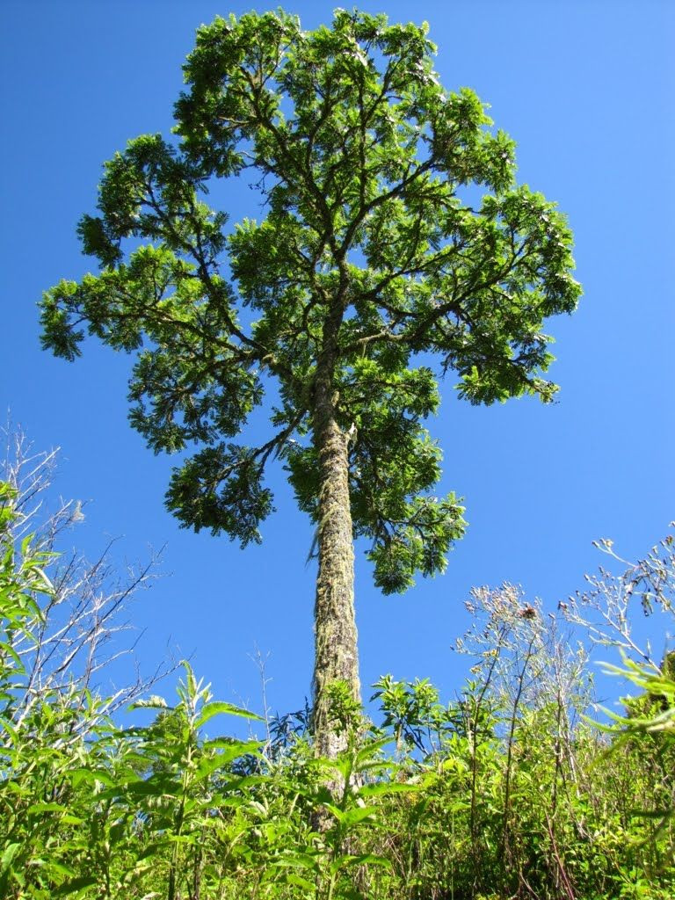
Madeira leve, perfumada e nobre. Usada na fabricação de móveis e instrumentos musicais.
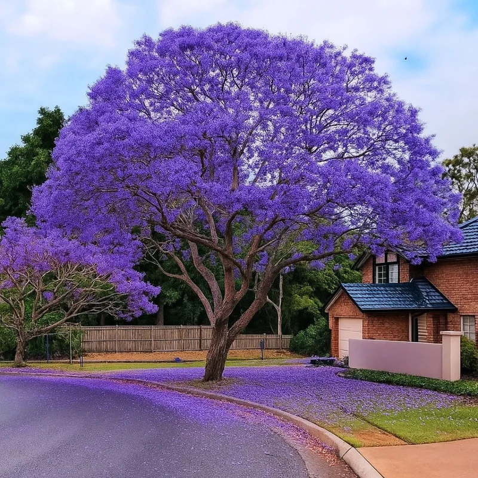
Floração roxo-azulada espetacular. Folhas bipinadas e finas. Comum no paisagismo urbano.
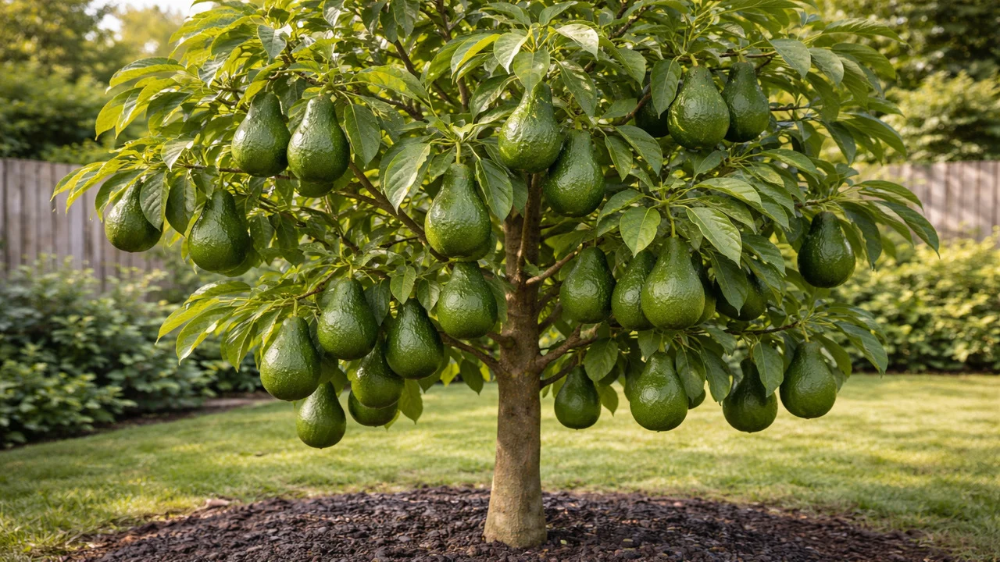
Árvore frutífera de copa densa. Folhas grandes, brilhantes. Origem na América Central.
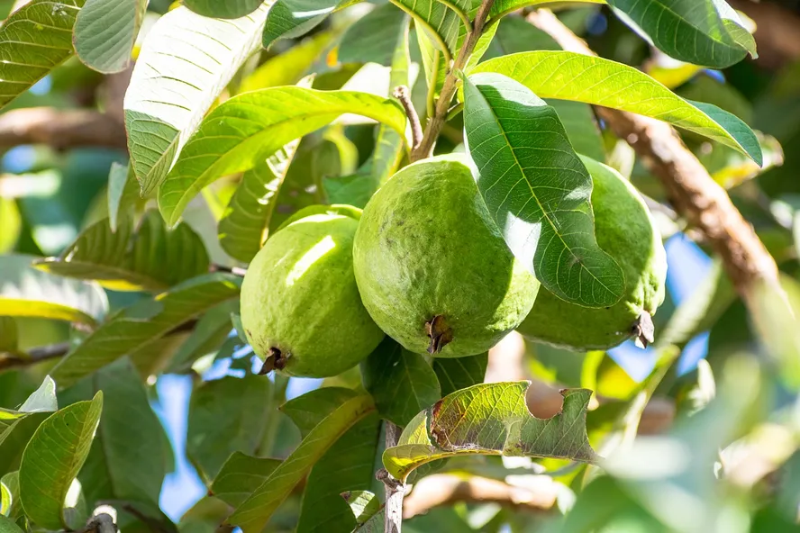
Tronco liso de casca avermelhada que descama. Folhas opostas, fruto rico em vitamina C.
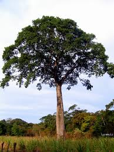
Árvore de grande porte da Mata Atlântica e Cerrado. Madeira durabilíssima, fruto medicinal.
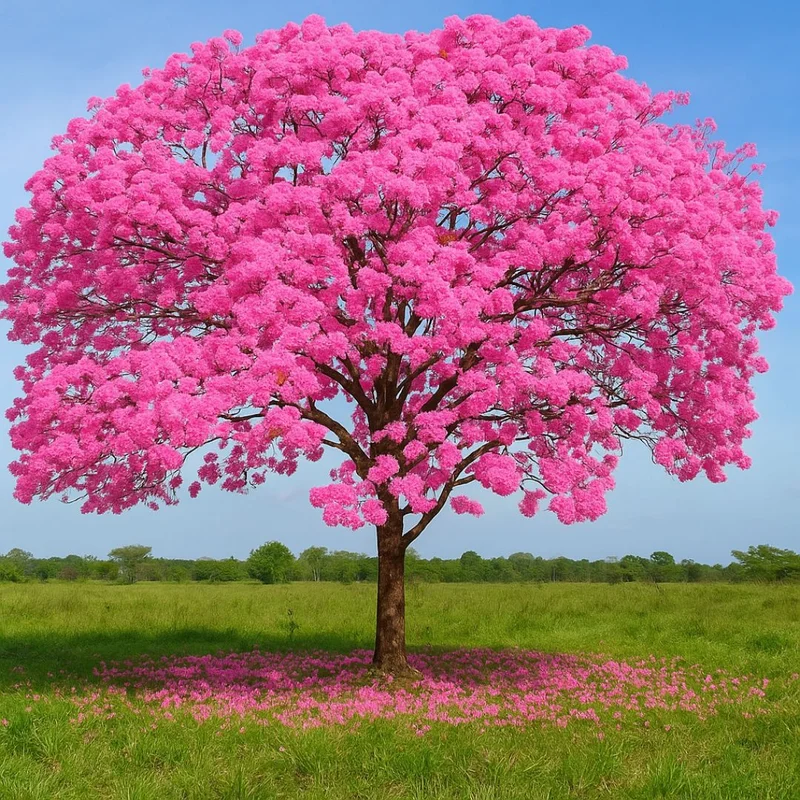
Floração rosa intensa. Madeira muito densa e resistente. Símbolo de várias regiões brasileiras.
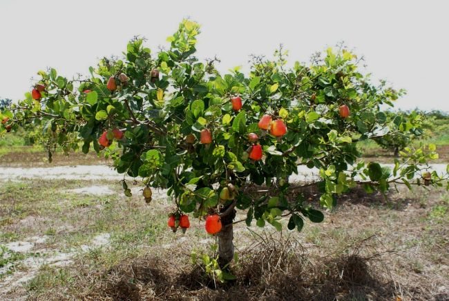
Originário do Brasil, copa baixa e ampla. Pseudofruto suculento e castanha apreciada mundialmente.
Cada nome popular conta uma história. Algumas árvores foram batizadas pelo que oferecem, outras pelo lugar onde nascem, outras ainda em homenagem a quem as descobriu.
Toda árvore do planeta pertence a uma das duas grandes divisões do reino vegetal: as Gimnospermas ou as Angiospermas.
Suas sementes ficam expostas, geralmente em estruturas chamadas estróbilos (as conhecidas pinhas). Não produzem flores nem frutos verdadeiros.
Folhas: em geral pequenas, em forma de agulha ou escama. Exemplos: pinheiros, araucárias, ciprestes, sequoias, cedro-do-líbano.
Suas sementes ficam protegidas dentro de frutos. Produzem flores verdadeiras e englobam a imensa maioria das árvores.
Folhas: diversas formas e tamanhos, geralmente largas. Exemplos: ipê, mangueira, jequitibá, jacarandá, cajueiro, abacateiro.
Algumas árvores escolheram a água; outras, o céu. A natureza criou caminhos para cada extremo.
Desde o jardim do Éden até as parábolas de Jesus, as árvores aparecem nas Escrituras como personagens silenciosas de grandes acontecimentos.
No centro do Jardim do Éden, essas duas árvores marcaram o destino da humanidade. Ao comer do fruto proibido, Adão e Eva trouxeram o pecado ao mundo.
Foi à sombra desses carvalhos que Abraão recebeu a visita de três anjos do Senhor, anunciando o nascimento de Isaque.
Fugindo de Jezabel, exausto e desejando a morte, o profeta Elias dormiu sob um zimbro. Ali um anjo o alimentou, dando-lhe forças para continuar.
O baixo cobrador de impostos subiu numa figueira-brava (sicômoro) para enxergar Jesus passar. Daquele galho, sua vida mudou para sempre.
Jesus se aproximou de uma figueira esperando frutos, mas só achou folhas. Ela secou — uma poderosa lição sobre fé que produz frutos.
Cristo carregou e foi pregado num madeiro — a árvore mais importante de toda a história, símbolo do amor que salva a humanidade.
Sobre a importância de proteger a vegetação do nosso ecossistema.
Vivemos sob um céu que respira por meio das folhas. Cada árvore que se ergue ao redor de nossas casas é, silenciosamente, uma fábrica de oxigênio, uma esponja que segura a chuva e um abrigo para incontáveis formas de vida. Quando olhamos para a vegetação do bioma onde moramos — seja Mata Atlântica, Cerrado, Caatinga, Amazônia, Pampa ou Pantanal —, vemos uma herança viva que não nos pertence: pertence também aos que ainda virão.
Conservar essa vegetação não é apenas uma questão estética; é uma questão de sobrevivência. Sem árvores, o solo se torna pó e o vento o leva embora. Sem florestas, os rios secam, porque é a transpiração das matas que alimenta as nuvens. Sem mata ciliar, as nascentes morrem. Sem árvores nas cidades, as ruas se transformam em fornos, e doenças respiratórias se multiplicam entre as pessoas que amamos.
Para o cristão, conservar a natureza é também um ato de adoração. Quando Deus criou o Éden, colocou o homem nele "para o cultivar e o guardar" (Gênesis 2:15). Cuidar da criação é honrar o Criador. Destruir uma floresta é apagar uma página de um livro escrito pela própria mão de Deus.
É preciso agir: plantar árvores nativas, denunciar desmatamentos, evitar queimadas, economizar papel, apoiar reservas e, principalmente, ensinar as próximas gerações a amar o verde. Cada muda plantada é uma prece. Cada árvore preservada é uma promessa. E cada floresta protegida é um futuro garantido. Que sejamos, como desbravadores, guardiões — não destruidores — desta criação que nos foi confiada.
É a idade do "Methuselah", um pinheiro-bristlecone na Califórnia, considerado a árvore não-clonal mais antiga do mundo.
É o tamanho do "Hyperion", uma sequoia gigante. Mais alto que um prédio de 30 andares!
É a quantidade de CO₂ que uma árvore adulta absorve da atmosfera, em média, todo ano.
É o número aproximado de espécies de árvores conhecidas no planeta. O Brasil tem mais de 8.700 delas.
Em Pando (Utah, EUA), 47 mil "árvores" são na verdade um único organismo: clones conectados por raízes. Pesa 6.000 toneladas.
Ruas arborizadas podem ser até 10°C mais frescas do que ruas sem árvores nos dias quentes.